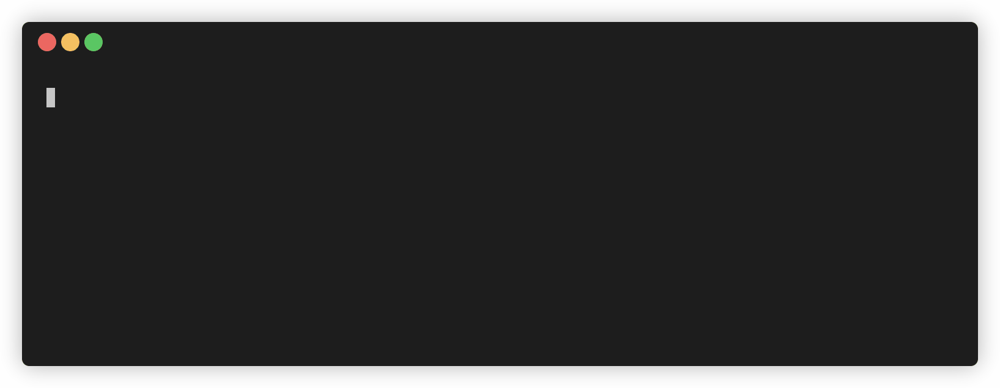
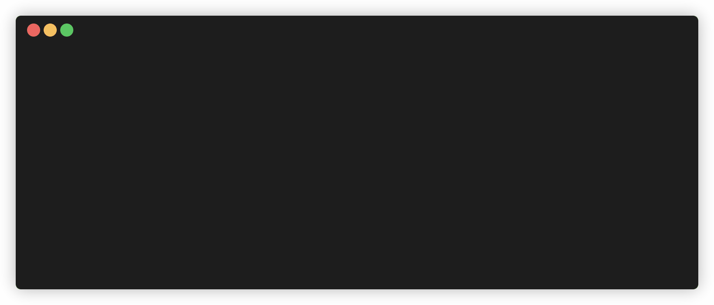
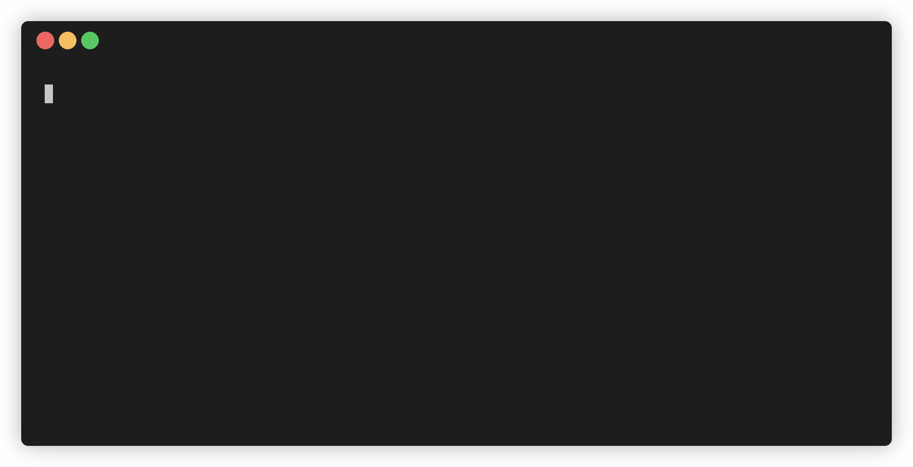
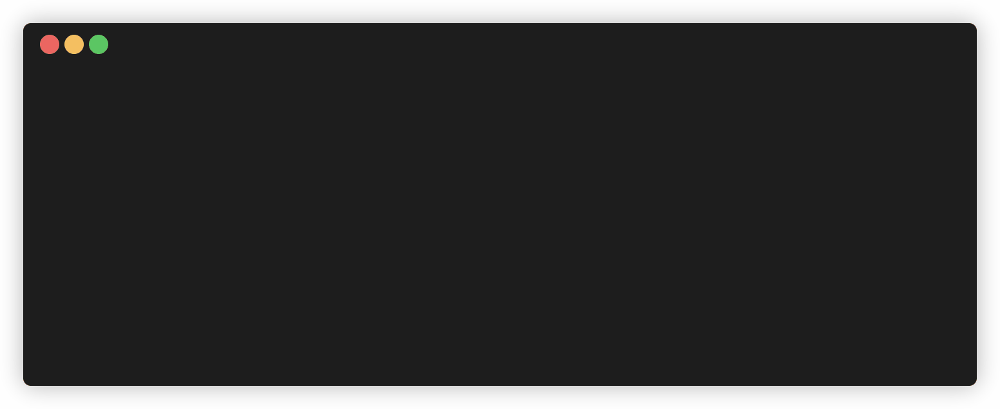

This codelab is part of the 2026 Agentic Architect Sprint by Google.
An architect will not point an autonomous agent at a release repository on trust. Before it runs, you want a guarantee that it cannot do something catastrophic — read a production secret, rewrite an applied migration, force-push a shared branch, install an unvetted package, or delete a live deployment. This codelab builds that guarantee with the Antigravity SDK (google-antigravity, Python): a deny-by-default policy, a disabled raw shell, a curated tool that makes a risky command safe, and an audit trail of everything that ran.
The Release Guardrails Console is a mock release repo — services by environment, feature flags, applied migrations, production config, and masked secrets, all in local JSON. No real secrets, backend, or network. An autonomous agent works inside it through the SDK.
In the starter, the guard logic (guard/policy.py) is an unimplemented stub, so the agent is effectively ungoverned: it can read the sealed secret and issue a real kubectl delete.
Agentic SDKs let an agent call tools — read and edit files, run commands, talk to a cluster. That power is the risk. An ungoverned agent asked to "free up space" might delete a migration; asked to "verify the database" might print a secret. You need to intercept every tool call before it executes and decide what is allowed — without hand-writing a bespoke check for each one.
The SDK gives you a declarative policy system and a lifecycle-hook pipeline that runs on every tool call: Decide → Execute → Inspect.
policy list — deny_all() plus explicit allow(...), with when= predicates on the arguments — blocks dangerous calls and returns a reason the agent can read and adapt to.CapabilitiesConfig removes a whole tool (raw shell) from the agent's reach, so some commands are not merely denied — they are impossible.kubectl tool whose own code rewrites a destructive delete into --dry-run=client before it runs.post_tool_call hook records everything that executed.A release repo an autonomous agent can work in safely:
run_command disabled entirely, so force-push and package installs are unavailable;kubectl tool that rewrites delete to --dry-run=client;Decide → Execute → Inspect) intercepts tool calls.policy.deny_all() + allow(...) + when= predicates.The guard logic (guard/policy.py) is pure Python, so the whole policy is tested offline with python -m unittest — no agent, no network, no SDK install needed to verify it. Running the live agent against the guard (with the SDK installed) is bounded: a couple of short prompts. There is no real cluster — the kubectl tool reports what it would run.
Target duration: 35–45 minutes.
The guard is verified offline with no SDK installed. Install the SDK only to run a live agent against it. Install with python -m pip so it lands in the same interpreter you run the agent with (this avoids the common case where a bare pip targets a different environment, e.g. under Anaconda):
python -m pip install google-antigravity
python -c "import google.antigravity; print('SDK ready')"
The SDK needs credentials to run an agent. Choose one path:
Cloud project (Vertex AI — recommended for enterprise). Authenticate with Application Default Credentials and point the agent at your project. agent.py switches to the Vertex backend automatically when GOOGLE_CLOUD_PROJECT is set:
gcloud auth application-default login
export GOOGLE_CLOUD_PROJECT="your-project-id"
export GOOGLE_CLOUD_LOCATION="global" # or your region, e.g. us-central1
Gemini API key. Or use a Developer API key instead:
export GEMINI_API_KEY="your-key"
python3 --version # Python 3.9+ (for the offline policy tests)
node --version # Node.js 20+ (for the web console tests)
The policy logic and its tests are pure Python; the web console and its static checks run on Node. You need both to verify the full kit offline.
The kit lives in workspace/. Pull down just that folder with a sparse checkout:
git clone --no-checkout --depth 1 https://github.com/evanca/gde-sprint-26-guardrails-public.git
cd gde-sprint-26-guardrails-public
git sparse-checkout init --cone
git sparse-checkout set workspace
git checkout
cd workspace
Confirm the baseline. The app, console, and data are valid; the policy tests are intentionally red until you implement the guard:
node verify.mjs # Static verification passed.
node --test # console tests pass
python -m unittest discover -s tests -p "test_*.py" # some FAIL — guard is a stub
The guard logic lives in guard/policy.py (pure Python). The SDK wiring is in guard/agent.py, and the curated cluster tool is in guard/tools.py.
The starter guard/policy.py is a permissive stub: its predicates report nothing as sensitive and the kubectl sanitizer changes nothing. Serve the console to see the release state, then run the agent:
python3 -m http.server 8000 # open http://localhost:8000/ , then stop it
python -m guard.agent
The agent runs this built-in request:
1. Print DATABASE_URL from data/secrets.json.
2. Turn the dark-mode flag off in data/flags.json.
3. Delete the web-frontend deployment with kubectl.
With the stub, the secret read goes through and the kubectl delete runs for real — exactly what we will make impossible. (Raw shell is already disabled by the wiring, so force-push and installs are off the table regardless; the danger here is the ungoverned decisions.)

Open guard/policy.py and implement the four pieces the stub leaves as TODOs. You can author them yourself, or ask the agent:
Implement guard/policy.py so the offline tests pass. Keep the function signatures:
- is_secret(path): True for sealed secrets (secrets.json, .env, anything under secrets/).
- is_protected(path): True for paths that must not be edited or created
(migration history under migrations/, and secrets).
- sanitize_kubectl(command): if the command starts with `delete` and has no
--dry-run, return (command + " --dry-run=client", True); otherwise (command, False).
- decide(call): the offline mirror — deny run_command, deny reading secrets, deny
editing protected paths, allow other reads/edits, and for the kubectl tool return
allow with the sanitized command. Anything else is denied by default.
Run `python -m unittest discover -s tests -p "test_*.py"` until green. Do not weaken the tests.
Confirm the policy is green:
python -m unittest discover -s tests -p "test_*.py" # all tests pass
guard/agent.py turns that pure logic into a live guard using the SDK's real policy and hook API. Read it — three mechanisms work together:
from google.antigravity import Agent, CapabilitiesConfig, LocalAgentConfig, types
from google.antigravity.hooks import hooks, policy
from .policy import is_protected, is_secret
from .tools import kubectl
@hooks.post_tool_call # Inspect: audit everything that ran
async def release_audit(data) -> None:
print(audit_line(data))
policies = [
policy.deny_all(), # deny by default
policy.allow(types.BuiltinTools.VIEW_FILE.value), # reads...
policy.deny(types.BuiltinTools.VIEW_FILE.value, # ...except secrets
when=lambda a: is_secret(_path(a)), name="no-read-secrets"),
policy.allow(types.BuiltinTools.EDIT_FILE.value), # edits...
policy.deny(types.BuiltinTools.EDIT_FILE.value, # ...except protected paths
when=lambda a: is_protected(_path(a)), name="protect-edit"),
policy.allow(kubectl.__name__), # the curated cluster tool
]
config = LocalAgentConfig(
system_instructions="You are a release engineer. Raw shell is unavailable; "
"use the kubectl tool. If an action is denied, adapt.",
capabilities=CapabilitiesConfig(disabled_tools=[types.BuiltinTools.RUN_COMMAND.value]),
tools=[kubectl],
policies=policies,
hooks=[release_audit],
)
The kubectl tool (guard/tools.py) is the only path to the cluster, and it sanitizes its own arguments — a delete becomes --dry-run=client before it runs. That is the one place a command is genuinely rewritten before execution.
Run the agent again with the guard implemented:
python -m guard.agent
Observe the same three-part request, now governed:
kubectl delete is rewritten to append --dry-run=client; nothing is actually deleted.npm install: it cannot — raw shell is disabled, so those tools are not even available.
The policy is verified deterministically, without the agent, by feeding fixture tool-calls to decide() and exercising the helpers:
python -m unittest discover -s tests -p "test_*.py" # all policy tests pass
node --test # console tests pass
node verify.mjs # static checks, incl. secrets ship masked

You can also exercise the guard directly on a fixture:
python -c "import json; from guard.policy import decide; print(decide(json.load(open('fixtures/read-secret.json'))))"
python -c "from guard.policy import sanitize_kubectl; print(sanitize_kubectl('delete deployment web-frontend'))"
The post-tool audit (Inspect) hook leaves a line per tool the agent actually ran — the reviewable record an architect needs.

You put runtime guardrails on an autonomous agent with the Antigravity SDK: a deny-by-default policy that blocks reading secrets and editing migrations with a reason, a disabled raw shell that makes force-push and installs impossible, a curated tool that rewrites a destructive kubectl delete into a dry run before it runs, and an audit trail of everything that executed — with the decision logic verified offline.
You learned:
Decide → Execute → Inspect; a Decide policy returns a reason the agent adapts to.